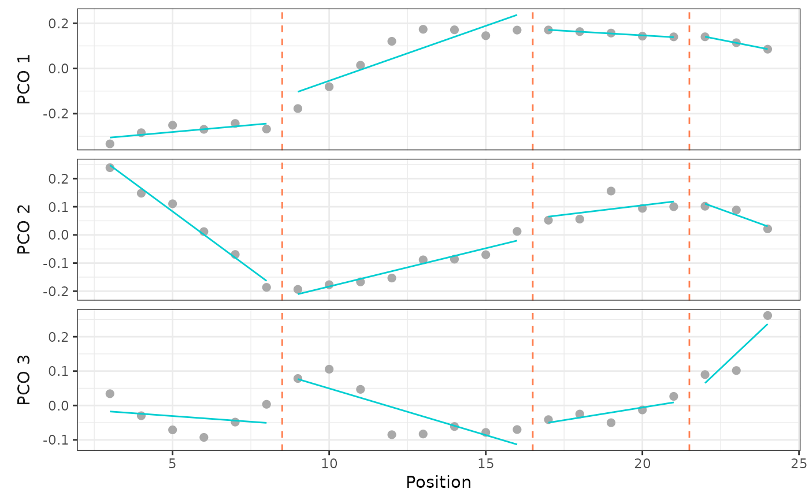

Calculate results of a single segmented regression model
calcmodel.Rdcalcmodel() fits a multivariate segmented regression model using the supplied PCOs and breakpoints.
Arguments
- x
a
regions_pcoobject; the output of a call tosvdPCO().- scores
numeric; the indices of the PCO scores to use as the outcomes in fitting the model (e.g.,1:4to use the first four scores).- bps
numeric; the indices of the breakpoints to use in fitting the model. To request a model with no breakpoints, set toNA.- cont
logical; whether to fit a model that is continuous (TRUE) or discontinuous (FALSE) at the breakpoints. Default isTRUE. Ignored whenbpsisNA.
Value
A regions_results_single object, which contains the results of the model (breakpoints and RSS of each PCO and overall) and model support statistics.
See also
calcregions() and addregions() for computing all possible models instead of just a single one; plotsegreg(), for which the plot method is an alias, for plotting the fitted regression lines; modelsupport() for interpreting the model support statistics.
Examples
data("alligator")
alligator_data <- process_measurements(alligator,
pos = "Vertebra")
# Compute PCOs
alligator_PCO <- svdPCO(alligator_data)
# Calculate a single segmented regression model
# using first 2 PCOs and a discontinuous model
regionsmodel <- calcmodel(alligator_PCO,
scores = 1:3,
bps = c(8, 16, 21),
cont = FALSE)
regionsmodel
#> Regions BP 1 BP 2 BP 3 sumRSS RSS.1 RSS.2 RSS.3
#> 4 8 16 21 0.07 0.029 0.011 0.03
#>
#> - Support:
#> AICc BIC
#> -358.2623 -338.9311
#Evaluate performance (R2) on that model
modelperf(regionsmodel)
#> Breakpoints: 8, 16, 21
#>
#> - Univariate:
#> R² Adj. R²
#> PCO.1 0.962 0.944
#> PCO.2 0.969 0.953
#> PCO.3 0.810 0.716
#>
#> - Multivariate:
#> R² Adj. R²
#> 0.945 0.918
#Plot model results:
plotsegreg(regionsmodel, scores = 1:3)
